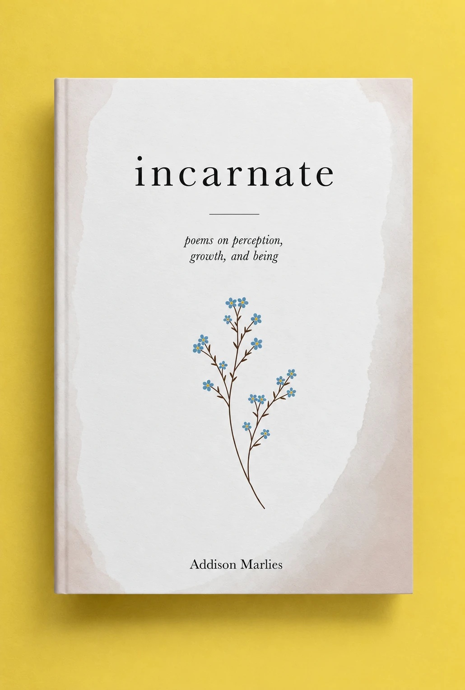
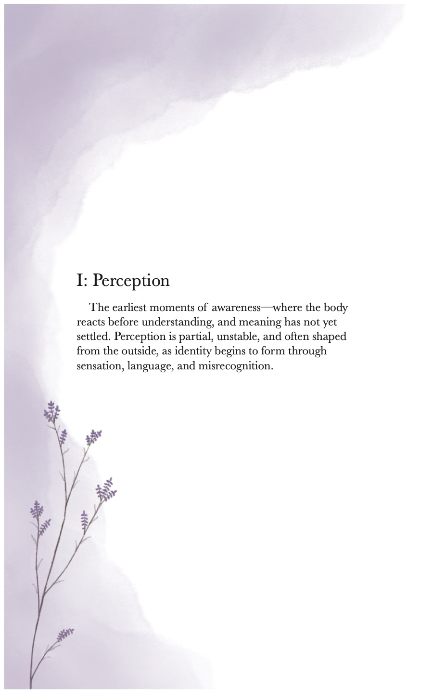
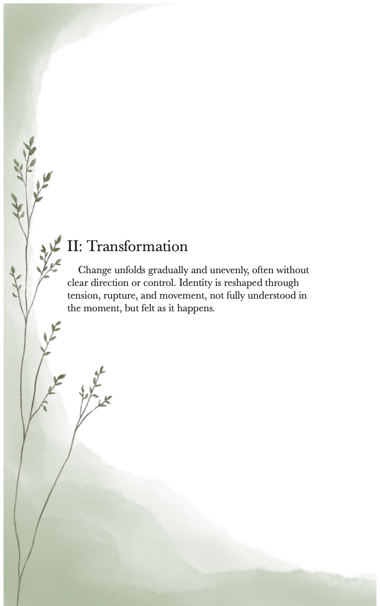
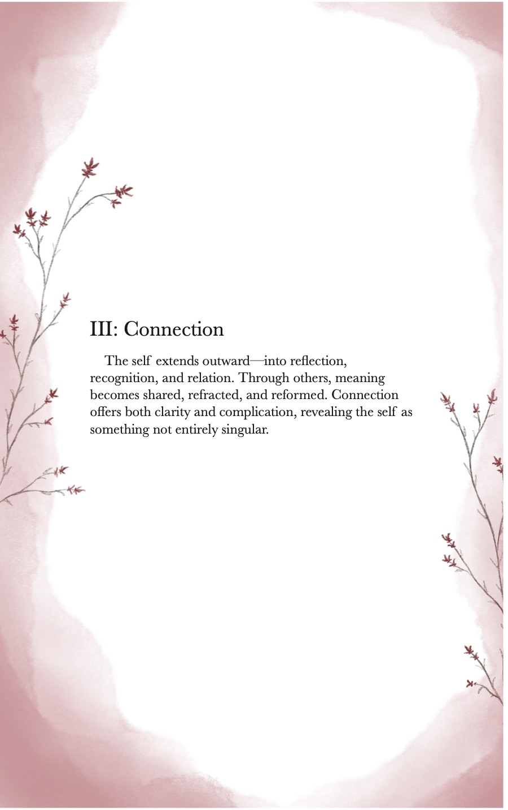
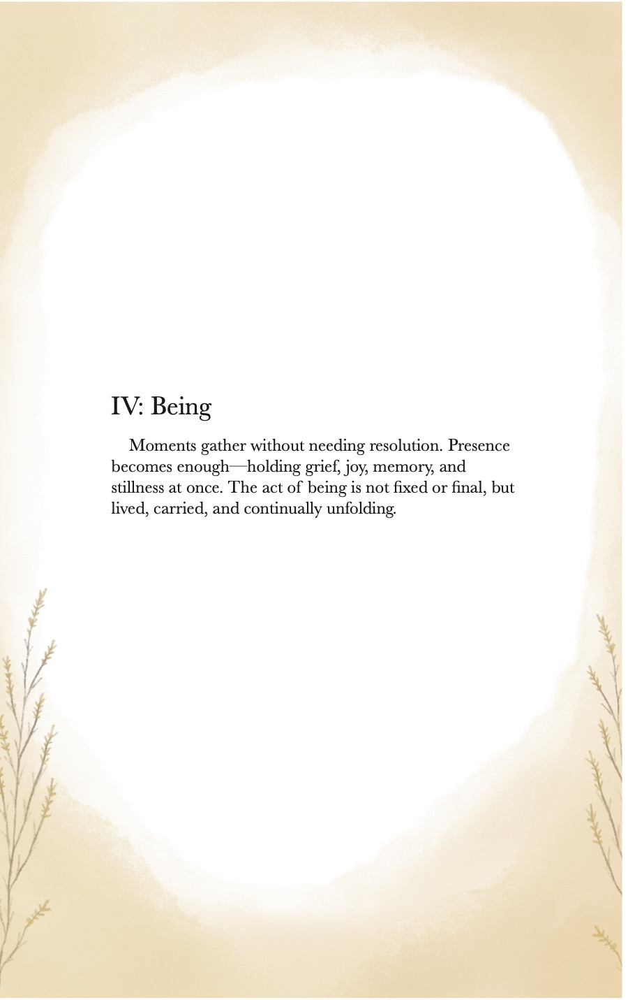

Poetry · Book · Independently published
Incarnate
poems on perception, growth, and being

01
Foreword
There are moments you experience before you know what to call them.
At the time, they don’t feel incomplete. They feel whole—just without language. Something happens, and your body understands it before your mind can follow. You carry it with you anyway.
Many of the poems that are in this collection began that way.
I wrote them at a time when I didn’t have the words for everything I was feeling, but I wrote them anyway. I didn’t always understand what I was trying to say, only that it mattered enough to try.
“This collection isn’t an attempt to explain those experiences. It’s a way of holding them.”
02
Four sections




- I: Perception
- The earliest moments of awareness—where the body reacts before understanding, and meaning has not yet settled.
- II: Transformation
- Change unfolds gradually and unevenly, often without clear direction or control.
- III: Connection
- The self extends outward—into reflection, recognition, and relation.
- IV: Being
- Moments gather without needing resolution. Presence becomes enough.
03
Excerpts
enigma
who am I? they try to name me as if a word could hold what I am. as if I have ever stayed the same long enough to be certain. they turn me over, search for edges, for something that repeats— something they can recognize and keep. I give them pieces. versions, moments, things that were true once.
chrysalis
I stopped waiting for wings. stopped looking for something that would lift all at once— something bright enough to prove itself the moment it arrived.
landing
I leave without hesitation. the air meets me as I move through it— not something to push through, just something already open. I don’t circle to be sure, don’t slow to correct my path. there is no break between leaving and arriving, only movement. and then— I am there. I land among others already settled. nothing shifts to make room for me. nothing has to.
incarnate
and still I am here. not complete, not unfinished, not waiting to become something else. just present in a body that carries itself forward. and that is enough.